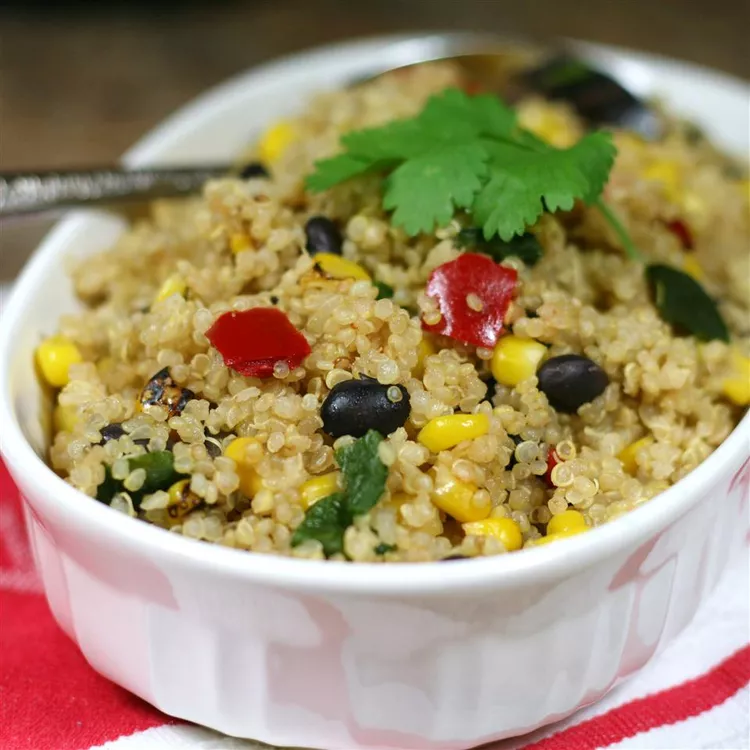

Mexican Quinoa

Description
This is my new favorite quinoa dish. It is super simple.
Ingredients
- Water
- Quinoa
- Frozen Corn & Black Bean Vegetable Blend
Steps
- Bring water and quinoa to a boil in a saucepan. Reduce heat to medium-low, cover, and simmer until quinoa is tender and water is absorbed, 15 to 20 minutes.
- Place vegetable blend in a microwave-safe bowl; microwave until heated through, about 5 minutes. Stir vegetable blend into quinoa.
Back